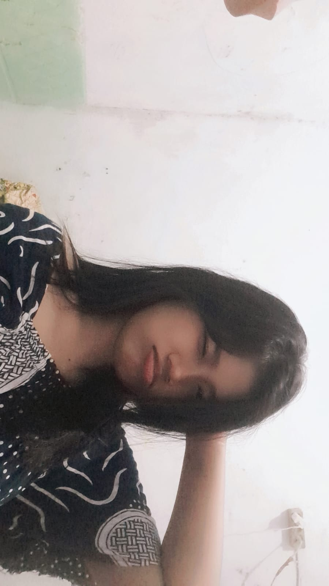
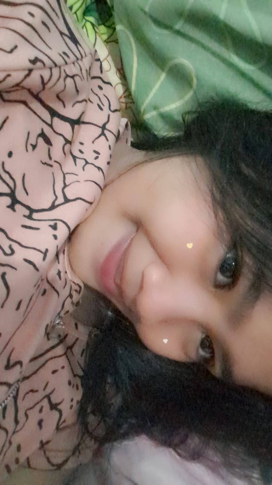
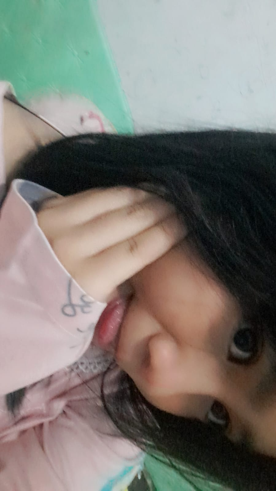
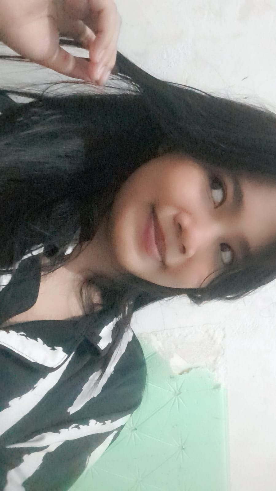
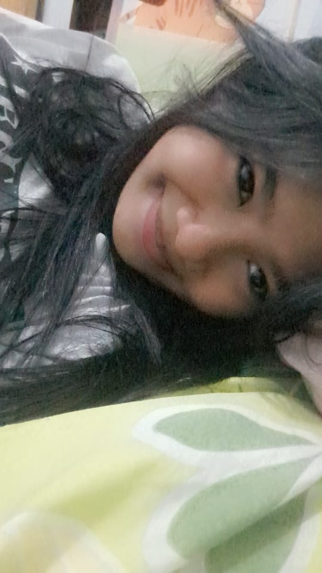

Memori Kita







Scroll ke bawah terus ya sayang...
Ada sesuatu di tombol ini:
Kapan ulang tahun aku?
Scroll ke bawah terus ya sayang...
Ada sesuatu di tombol ini:
Notin, mungkin kata-kata ini tidak akan cukup untuk menggambarkan betapa berartinya kamu bagiku. Hubungan kita memang tidak pernah luput dari badai, rintangan, dan juga sejuta masalah yang datang silih berganti. Namun di balik semua kerumitan itu, ada satu hal yang tidak pernah berubah, yaitu perasaanku padamu.
Ada saat di mana kita berdua merasa sangat lelah dan hampir memilih untuk menyerah pada keadaan. Ego yang tinggi seringkali menjadi dinding besar yang memisahkan komunikasi dan pengertian di antara kita. Namun, aku selalu kagum bagaimana kita akhirnya selalu menemukan jalan pulang untuk kembali saling memeluk.
Aku tahu bahwa bersamaku mungkin bukan hal yang selalu mudah untuk kamu jalani setiap harinya. Kamu seringkali harus bersabar menghadapi sifatku, kekuranganku, dan segala hal yang mungkin melukaimu. Terima kasih karena sampai detik ini kamu masih memilih untuk bertahan dan tidak pergi meninggalkan.
Kita berdua saat ini sedang berada dalam fase perjuangan besar untuk merubah diri masing-masing. Aku sedang berusaha menjadi sosok yang lebih baik, lebih tenang, dan lebih bisa menjagamu dengan benar. Aku melihat kamu pun melakukan hal yang sama, berjuang melawan rasa sakit demi masa depan kita.
Ingatlah kembali saat-saat pertama kita memulai ini semua dengan penuh harapan dan doa yang tulus. Rasa sayang yang kita miliki seharusnya jauh lebih besar daripada masalah-masalah kecil yang seringkali merusak suasana. Jangan biarkan amarah sesaat menghancurkan bangunan cinta yang sudah susah payah kita susun bersama.
Masalah bagi aku bukan lagi alasan untuk kita berpisah atau mencari sosok yang baru di luar sana. Masalah adalah guru yang paling jujur untuk memberitahu kita di mana letak celah yang harus diperbaiki. Jika nanti badai kembali datang menerjang, berjanjilah untuk tetap memegang tanganku dengan sangat erat.
Sabar adalah kunci utama yang membuat kita masih bisa melihat matahari bersama hingga saat ini juga. Tanpa kesabaranmu yang seluas samudera, mungkin aku sudah kehilangan arah dalam menjalani hidup ini. Kamu adalah jangkar yang membuatku tetap membumi di tengah badai emosi yang seringkali meluap-luap.
Terkadang aku berpikir, apa jadinya hidupku jika kamu tidak hadir dan membawa warna yang begitu indah. Kamu adalah rumah, tempat di mana aku bisa menjadi diriku sendiri tanpa takut akan dihakimi. Walaupun kita sering berbeda pendapat, namun tujuanku selalu sama, yaitu melihatmu tersenyum bahagia.
Aku ingin kita menua bersama sambil menceritakan kembali betapa hebatnya kita melewati masa-masa sulit ini. Semua pertengkaran hari ini akan menjadi cerita lucu yang akan kita tertawakan di masa depan nanti. Kita akan membuktikan kepada dunia bahwa cinta yang sejati adalah cinta yang mau berproses bersama.
Terakhir, aku hanya ingin berpesan agar kamu tidak pernah bosan untuk saling mengingatkan dalam kebaikan. Tetaplah menjadi sandaranku saat dunia sedang tidak ramah kepadaku, karena kamu adalah kekuatanku. Aku mencintaimu hari ini, esok, dan selama detak jantung ini masih terdengar di dalam dadaku. I love you so much, Notin.